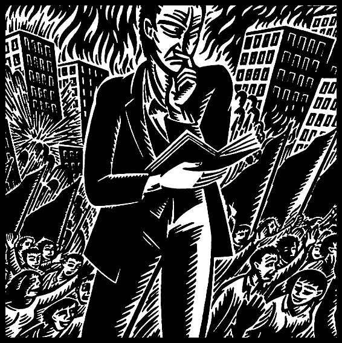

Pejabat

Para anarkis, yang menolak segala otoritas (baca: kekuasaan), kerap tergelincir untuk memaknai bahwa kebebasan yang hendak dicapai berarti berdiri tanpa kekuasaan sama sekali. Padahal bukan, itu bahkan bukan anarkisme. Yang jelas-jelas ingin dicapai adalah mencoba menghancurkan kekuasaan segelintir orang atas dirinya, atas hidupnya, dan memegang kendali penuh kekuasaan, langsung di tangan masing-masing.
Alih-alih menghancurkan dan meniadakannya, ia bermaksud untuk merebutnya, bukan untuk melanjutkan proses kekuasaan atas yang lain, tapi kekuasaan mutlak diri untuk menuju kebebasan. Kebebasan diri, atau kedirian yang sempurna, hanya akan tercipta jika seseorang punya kekuasaan atas dirinya sendiri. Kekuasaan atas orang lain berarti menggagalkan kebebasannya, sebab bagaimanapun juga, kebebasan di bawah kekuasaan orang lain bukanlah kebebasan. Demikianlah kita mula- mula harus menyadari bagaimana korelasi positif antara kekuasaan dan kebebasan.
Hal ini yang tidak bisa ditangkap oleh oposisi anarkisme. Bagi mereka, kebebasan itu mutlak diberikan dan perlu dijamin oleh kekuasaan. Karena itu penting bagi mereka untuk menjaga status quo kekuasaan, untuk mempertahankan pondasi kestabilan dan kemapanan sistem, serta merebut kekuasaan atas orang lain tersebut, salah satunya dengan pemilihan umum. Asumsi dasar yang mereka percayai adalah jika kita memilih dengan tepat, maka penguasa yang baik akan memberikan dan menjamin kebebasan. Bukankah ini konyol, mengingat tidak ada satu manusia pun yang sempurna di dunia, dan karena penguasa adalah manusia, maka dengan demikian tidak ada kebebasan yang sempurna pula dari penguasa yang tidak sempurna tersebut? Namun mereka malah mentolerir hal ini dan menganggapnya sebagai sesuatu yang wajar dan layak diterima, tanpa mempertimbangkan adanya pilihan-pilihan lain yang sebenarnya jauh lebih masuk akal dan manusiawi.
“Pemilu itu bukan untuk memilih yang terbaik, tapi untuk mencegah yang terburuk berkuasa,” ujar Frans Magnis Suseno, yang dengan lancang mengeluarkan pernyataan kompromis macam ini. Jika demikian, apalagi yang dibutuhkan dari penguasa jika mereka memang tidak mungkin memberikan yang asasi dari setiap manusia, yaitu kebebasan?
Pemimpin vs Penguasa
Setiap otoritas, atau mereka yang berkuasa pasti menjadi pemimpin. Namun pemimpin yang sejati, yang dirinya kuat, pintar dan baik hatinya, tidak memerlukan otoritas untuk mendapatkan dan mengarahkan pengikut. Saya heran pula dengan kebanyakan anarkis yang juga tergelincir dalam memahami hal ini. “Kata pemimpin,” ujar dedengkot anarkis Murray Bookchin, “tidak mesti membuat kita takut untuk mengenali bahwa sejumlah individu memang memiliki lebih banyak pengalaman, kedewasaan, perkembangan karakter dan sebagainya ketimbang orang-orang lainnya.” Menurut Bookchin, menolak perbedaan ini dan mengatakan bahwa setiap orang berada pada tingkat pengetahuan, pengalaman dan penglihatan yang sama adalah mitos tidak masuk akal yang digugurkan oleh realitas kehidupan sehari-hari dan biologis.
Tidak ada tirani yang lebih halus daripada “tirani ketiadaan struktur,” yang juga bisa mencakup tirani interpretasi palsu atas kesetaraan, yakni bahwa kita semua berpengetahuan sama. Ada perbedaan besar antara mengatakan bahwa kita semua berpengetahuan sama dan mengatakan bahwa kita semua mampu secara potensial, belajar dan berbagi pengetahuan dengan landasan egaliter.
Dengan ini kita harus membedakan dulu antara penguasa (authority) dan pemimpin (leader). Anarkisme terang-terangan menolak
" Namun pemimpin yang sejati, yang dirinya kuat, pintar dan baik hatinya, tidak memerlukan otoritas untuk mendapatkan dan mengarahkan pengikut. "
otoritas, sebuah posisi dominasi kepemimpinan yang tiran dan elitis, eksistensi hierarki yang jelas dengan perintah dan keputusan yang koersif, diiringi dengan sanksi terhadap ketidakpatuhan dan pembangkangan. Anarkisme, sebaliknya, mengakui kebebasan individu serta menolak kepercayaan mutlak, yang menurut dedengkot anarkis lainnya, Mikhail Bakunin, akan memadamkan nalar dan keberhasilan jerih payah kita, dan mengubah kita menjadi “budak belian, alat bagi hasrat dan kepentingan orang lain.”
Otoritas bermakna sangat luas. Dalam bentuk tertentu, kita tidak bisa benar-benar dapat menghapus otoritas itu. Anarko-kristen misalnya, mengakui bahwa satu-satunya otoritas adalah Tuhan dan menolak patuh terhadap institusi-instusi agama dan negara, bahkan negara agama sekalipun. Kita tidak dapat menyangkal bahwa ada beberapa orang punya pendapat yang lebih otoritatif pula, seperti insyinyur dan dokter. Namun “otoritas” ini bersifat profesional, dan saran atau perintahnya kita patuhi (atau tidak), karena mereka memiliki pengalaman dan kemampuan dalam bidangnya.
Namun pemimpin, tidak memerlukan kewenangan untuk memberikan pengarahan dan meyakinkan orang banyak untuk melakukan apa yang terbaik bagi mereka. Seorang anarkis sekalipun akan menyetujui, atau melaksanakan permohonan seorang bukan karena ia harus tunduk, tapi karena ia sukarela dan setuju. Jika ia tidak sukarela dan tidak setuju, maka tidak perlu dipenuhi. Ia patuh atas kehendak bebas dan kediriannya, inilah anarkisme.
Sekali lagi, kita tidak dapat mengelak bahwa dalam masyarakat, akan terdapat pemimpin, termasuk dalam organisasi anarkis sekalipun, karena kemampuannya dalam mengorganisir, pengetahuan serta keseberhajaannya. Kita tidak boleh mematikan inisiatif atau kecenderungan dominan dalam pengambilan keputusan terhadap mereka, tetapi keputusan tetap diambil secara rasional.
Pejabat Federasi
Kita sudah membedakan antara penguasa dan pemimpin, sekarang kita harus membahas soal pejabat-pejabat di dalam federasi. Pejabat dalam artian administratif perlu dibedakan dengan otoritas. Dalam banyak praktik masyarakat anarkis, kita bisa melihat bahwa majelis, dewan atau komune memiliki pejabat-pejabat mereka. Bahkan Bakunin sendiri menulis bahwa “rakyat memiliki common sense yang sehat dan praktis tatkala menjalankan urusan-urusan komunal. Mereka hampir memahami dan tahu betal bagaimana memilih para pejabat yang berkemampuan di tengah-tengah mereka. Karena inilah pemilihan-pemilihan munisipal selalu dengan baik merefleksikan sikap dan kehendak rakyat.”
Tetapi, pejabat-pejabat federasi jelas akan jauh berbeda dengan apa yang kita maksud dengan pejabat dalam organisasi kenegaraan. Pejabat federasi bahkan bukanlah otoritas, sebab menangani urusan administrasi dan teknis belaka. Ia akan ada dalam unit terkecil dari federasi. Jika federasi mahasiswa di suatu kota akan didesentralisasi hingga aras fakultas, maka pejabat ini wajib ada di unit fakultas. Jika federasi tidak didesentralisasi, maka federasi kota itu juga wajib memiliki pejabat.
Federasi membutuhkan beberapa posisi yang tidak mungkin tidak ada, yaitu ketua, sekretaris dan bendahara dengan masa jabatan yang ideal adalah satu tahun. Namun untuk dua yang terakhir, kita tidak perlu menjelaskan alasannya lebih lanjut. Tetapi untuk ketua, mungkin akan ada beberapa anarkis yang akan segera menolaknya. Tapi kita harus sadar bahwa ada tiga tugas yang harus di isi:
1) memimpin rapat,
2) mewakili federasi dalam pertemuan-pertemuan eksternal, dan
3) menjadi narahubung organisasi.
Bisa saja tugas ini langsung dibagi, sehingga tidak memerlukan ketua. Sebagai contoh, untuk narahubung, EZLN di Chiapas, Mexico memiliki sub-commandante. Walau jabatan itu disebut sebagai komandan, ia tidak memiliki otoritas dalam hierarki EZLN dan tidak dapat memerintah. Sementara itu Earth First! di Amerika memiliki juru bicara untuk mewakili organisasi tersebut ke hadapan pemerintah atau media.
Untuk memimpin rapat, eklesia di Yunani melakukan undian bergilir. Cara ini dirasa demokratis, tapi tidak semua orang punya kemampuan berbicara di depan publik dengan baik, atau mengarahkan berjalannya rapat. Sehingga ketua hanya menjabat selama beberapa jam atau beberapa hari. Ketua yang dipilih misalnya, pasti dipilih karena pertimbangan atas kemampuan memimpin rapat.
Sementara untuk mewakili pertemuan, kita bisa mencontoh organisasi kebudayaan Taring Padi di Yogyakarta. Mereka membuat daftar gilir untuk mewakili Taring Padi ke pameran-pameran atau kegiatan yang membutuhkan perwakilan keluar negeri. Sebab jika hal ini tidak diatur, maka akan ada kecemburuan didalamnya. Orang- orang yang berada di daftar paling atas akan berangkat duluan, dan jika sudah menyelesaikan urusannya, namanya akan ditaruh di barisan paling bawah. Begitu seterusnya sehingga setiap anggota akan memiliki kesempatan untuk mewakili organisasinya. Namun hal ini dilakukan untuk kegiatan-kegiatan yang eksklusif, atau anggap saja, kegiatan yang bisa memancing perpecahan di dalam organisasi.
Sekretaris dan bendahara tetap diperlukan, namun untuk ketua, hal ini harus diputuskan oleh federasi kota masing-masing, atas kesepakatan mereka tentu saja. Jika federasi kota didesentralisir, maka bisa dipertimbangkan untuk membentuk pejabat federasi kota.